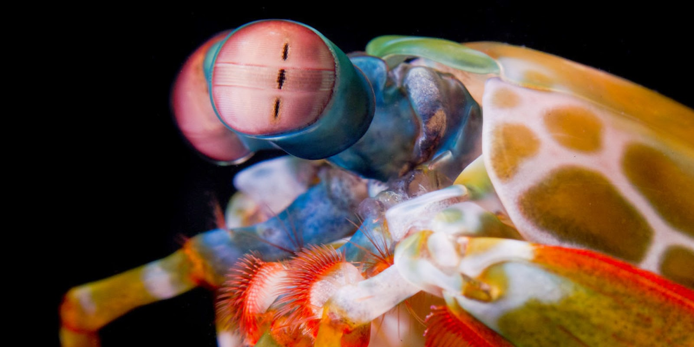
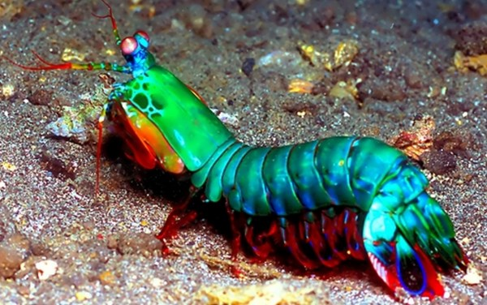
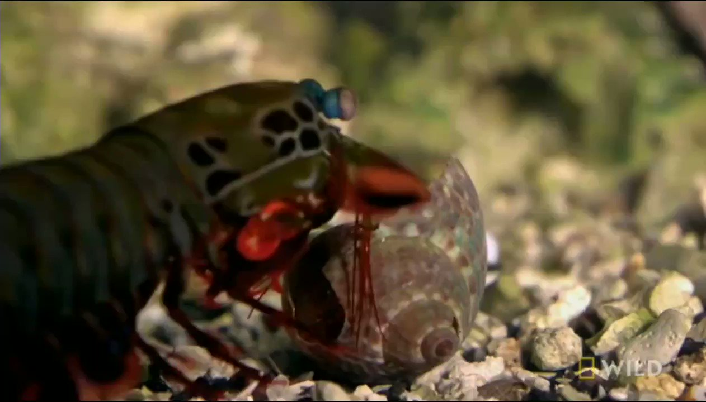

Fatos sobre o Stomatopoda

Nome e origem
Nome científico : Stomatopoda (por exemplo, Odontodactylus scyllarus )
| Reino | Filo | Subfilo | Classe | Subclasse | Ordem |
|---|---|---|---|---|---|
| Animalia | Arthropoda | Crustacea | Malacostraca | Hoplocarida | Stomatopoda |

Visão
Esses animais possuem o mais complexo sistema de visão de cores do mundo animal, pois enxergam 12 cores primárias, correspondentes aos 12 pigmentos distintos presentes em sua retina.

Aspecto físico
Medindo cerca de 18 cm e habitando águas claras e rasas dos recifes, esse animal de colorido intenso é bastante apreciado no Aquarismo.

Curiosidade
Excelente golpeador, o tamarutaca "soca" suas presas com suas garras com uma força de até 2,5 mil vezes seu peso em menos de 800 microsegundos. Este nocaute equivale a um tiro de pistola calibre 22.